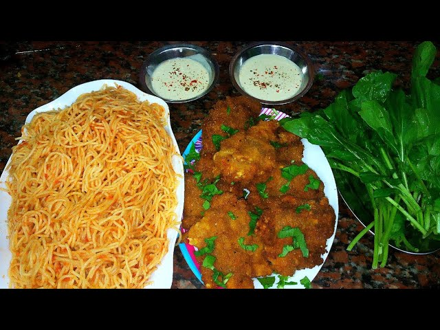
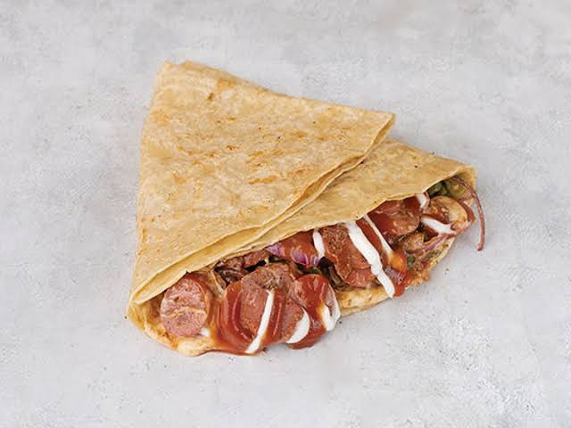

Koshary
Ingredients:
- 2 cups of Egyptian Rice
- 2 cups of black drenched lentils
- 100-250 grams of spaghette pasta
- 250 grams of tomato juice
- 2-3 spoons of tomato paste
- 4-5 minced cloves of garlic
- 10ml of vineger
- lots of salt, pepper, cumin, dried coriander, and chili powder
- 4 big spoons of Egyptian organic clarified butter or oil
- 3 big onions
- 2 medium tomatos and chili peppers
- 1 cup of shortly cut noodles
Instructions:
- Boil water and put the spaghette in it to cook until aldente.
- Put 2 spoons of butter or oil in a pot on medium heat with slices of 1 big onion.
- Simmer the noodles and rice together in the pot while stirring for 5 minutes.
- Add the drenched lentils to the put, stir the ingredients then add 3 cups of warm or boiling water.
- Until the mixture of rice and lentils is cooked, get three small pots on medium heat to make the salsa (tomato sauce), Da'a (garlic-vinegar sauce), and Shatta (chilli sauce).
- For the Da'a, add 1 spoon of butter or oil, 2-3 minced cloves of garlic, 1 tablespoon of salt, cumin, dried coriander, and black pepper.
- When the garlic's color starts turning to brown, add 10ml of vineger, 100ml of water.
- Cut some tomatos and chili peppers and put them to the da'a after boiling it for 5 minutes and leaving it to become cooler.
- For the Salsa, add 2 spoons of butter or oil, 2-3 minced cloves of garlic, slices of 1/2 an onion, 2 spoons of tomato paste, 1 tablespoon of salt, cumin, dried coriander, and black pepper.
- When the garlic's color starts turning to brown, add 10ml of water and 250ml of tomato juice.
- leave the slasa to boil for 5 minutes and leave it off the heat to become cooler.
- For the Shatta, add 1 spoon of butter or oil, 2 tablespoons of chilli powder.
- Stir for 2 minutes and add 4 big spoons of Salsa and 4 big spoons of Da'a.
- Cut some tomatos and chili peppers and put them to the Shatta after boiling it for 5 minutes and leaving it to become cooler.
- In a frying pan, fry the slices of 1 and half onions after caoting them with flour and starch
- Finally, get a dishing plate, add the rice and lentils mixture, the pasta on top of them along with the salsa, da'a, and Shatta.
- Don't forget to top the plate with a generous amount of fried onion slices.

Pasta with chicken panne
Ingredients:
- 250 grams of medium chicken breasts slices
- 250 grams of spaghette pasta
- 2-3 minced cloves of garlic
- 2 table spoons of salt, pepper, dried coriander, and chili powder
- 100gm of flour and starch
- 2 eggs
- 2 spoons of oil or clarified butter
- 100ml of tomato juice
- 2 spoons of tomato paste
Instructions:
- boil 250 ml of water and cok the pasta in them for 10-15 minutes.
- drain the pasta from water and keep it aside.
- put 2 spoons of butter or oil on a pot on medium heat.
- Add the minced garlic then the tomato paste then the tomato juice.
- Add the spices and keep the tomato sauce boiling while making the chicken panne.
- For the panne, put the chicken breasts slices in flour then egg then flour while pressing hard in the flour steps.
- Deep fry the panne slices for 10-15 minutes depending on the thickness of the slice.
- Serve the pasta on a plate with a chilli powder sprinkle and the panne on top.

Burger
Ingredients:
- 2 Burger Buns (top & bottom)
- 100-150 grams burger battie
- 2 slices of tomatoes, lettus, onions, and jalapeños each
- 2 spoons of clarified butter or oil
- 5 grams Burger and Ketchup Sauces
- 1 Cheese Slice
- 1 egg
- salt and pepper
Instructions:
- Put the clarified butter or oil on pan on medium heat for 1 minute.
- Add the burger battie and leave it for 5 minutes on each side.
- Crack an egg beside the burger battie and leave it for 5-7 minutes.
- Sprinkle some salt and pepper on the egg.
- While the battie and the egg are cooked, Put the Slices of tomatoes, lettus, onions, Ketchup, Burger sauce, and jalapeños on the bread in any order.
- Don't forget to add the fried egg on the top of the burger.
- serve the burger with french fries and coke.

Crepe
Ingredients:
- 100-150 grams of Hotdogs slices
- 2 spoons of clarified butter or oil
- 50 grams of onion cubes, colored peppers slices, olives slices, and jalapeños slices
- 1 Big Sag Bread
- 5 grams Mayonnaise and Ketchup Sauces
Instructions:
- Put the clarified butter or oil on pan on medium heat for 1 minute.
- cook the onion slices, colored peppers slices, olives slices, and jalapeños slices for 5 minutes.
- Add salt, pepper, chilli powder.
- Add the hotdog slices with the vegetables to cook with each other for 10 minutes.
- Take the hotdog mixture an put it on a Big Sag Bread loaf.
- rap it as you like and serve it with fries and extra sauce.
